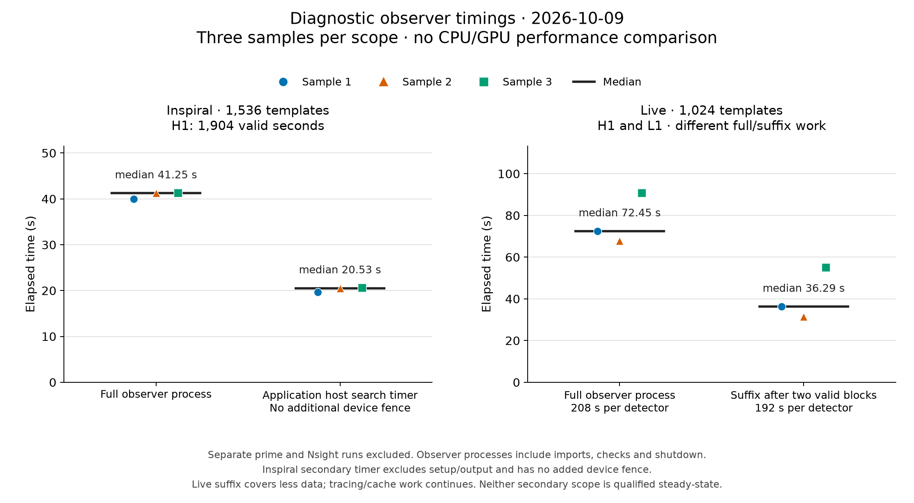
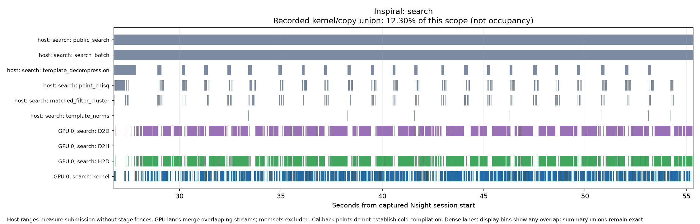
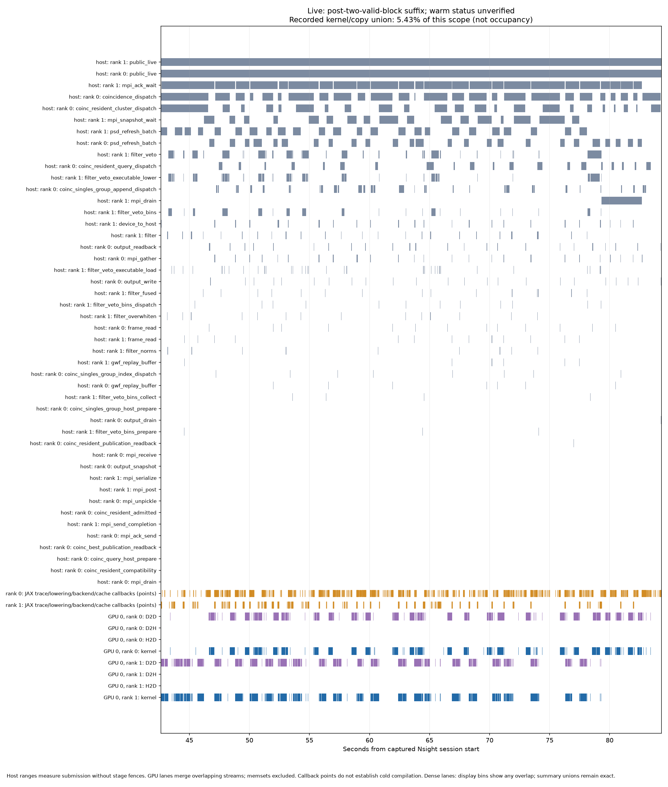

The current Inspiral search completed three fresh-process samples with a median wall time of 41.25051 seconds. Its separate Nsight run preserved every saved scientific dataset. Full-bank original-PyCBC agreement for the default device paths remains unqualified: changing only decompression changed the trigger inventory, and the fresh native control also produced a different inventory. Fresh Live profiles are also complete, with continuing tracing/lowering and backend/cache work. No scientific speedup or steady-state capacity claim is established.
These measurements describe the complete reviewed stack at
366c7a955570deabaa1219d353f7847b21384698, rather than the effect of each individual
PR. The hardware is an NVIDIA RTX 4090 and AMD Ryzen Threadripper PRO 3995WX.
The runtime uses Python 3.12.8, JAX/jaxlib 0.11.2, NumPy 2.2.6 and LALSuite 7.26.15.
Waveforms are held to original PyCBC/LAL; diffGW is not used. The system was
shared with GPU services and other activity, so these are not measurements of
dedicated-system capacity.

Plot recipe and exact plotted values. Rebuild with
python tools/plot_measurements.py from the repository root.
The workload contains 1,536 distinct compressed IMRPhenomD templates, five segments and 1,904 unique valid H1 seconds, sampled at 2,048 Hz with complex64 search arrays. Completed work is 2,924,544 template-detector-seconds. The GPU batch size is 64, with one affined host CPU and numerical thread pools limited to one. The primary calculation uses device decompression and the other default JAX numerical stages.
A separate prime populated a private persistent compilation cache. Each measured sample then started a new process and completed its HDF output before exiting. Full wall time includes observer imports, setup, compilation that occurs during the process, search, output and shutdown. No stage fences were added.
| Sample | Full process wall, seconds | Application host search timer, seconds |
|---|---|---|
| 1 | 40.00176 | 19.66852 |
| 2 | 41.25243 | 20.53457 |
| 3 | 41.25051 | 20.53768 |
| Median | 41.25051 | 20.53457 |
The application timer is the existing HDF run_time × (1 − setup_time_fraction).
It excludes setup and HDF writing and has no additional completion fence; queued
device work can extend beyond it. It is not a synchronized warmed GPU-compute
measurement. Timing and execution receipts.
The separate profiled search observer ran for 56.73761 seconds. The outer Nsight command took 109.44156 seconds, including capture/report processing. Neither number enters the three-sample median. The captured target-process activity extent was 56.71566 seconds: recorded GPU kernels and copies occupied a union of 3.82056 seconds, or 6.73634% of that scope. During the 28.55305-second filtering window, their union was 3.51318 seconds, or 12.30405%.
These percentages measure the union of captured target-process kernel and memcpy
intervals. They exclude memsets and unrelated services and do not measure SM
occupancy, saturation or whole-device utilization. Overlapping events count once
in the union. The leading kernel by summed event duration was
ordered_point_chisq_recurrence, at 2.50204 seconds within the filtering window;
summed kernel durations are
not a critical-path decomposition. Host ranges describe submission and collection
without added device fences.

Whole-process overview · Profile analysis · Profile observation.
All three unprofiled samples and the profile produced 3,674 triggers. Their 18 saved scientific datasets match exactly in dtype, shape, order and value bits; only four timing/rate datasets were excluded. This establishes repeatability and profile neutrality for the saved-output scope, not agreement with original PyCBC. Exact comparisons and decompression diagnostic.
A separate host-decompression run produced 3,675 triggers: 3,674 identities were shared, with one additional identity in the host-decompression output. Among shared triggers, the largest relative chi-square difference was 0.428475%, and the largest relative SNR difference was 0.00821767%. These are measured route differences; no fitted tolerance or scientific acceptance is implied.
One fresh pristine native-PyCBC control at 454ee900 completed in
239.86290 seconds, producing 3,676 triggers. This single control is not a
repeated baseline benchmark, and full pipeline qualification remains incomplete.
No CPU/GPU speedup is claimed.
Native-reference comparison.
The 3,674 shared triggers have a maximum relative chi-square difference of
0.919226% and maximum relative SNR difference of 0.00818487%; two identities occur
only in the CPU output. These are descriptive composed differences, without an
acceptance tolerance or attribution to one stage.
The full-bank original-route JAX attempt was stopped incomplete because of execution cost, rather than a demonstrated numerical failure. A bounded composed control using the first two original templates, the same five 512-second segments and all 1,904 valid H1 seconds completed with all original-route selectors enabled. Its five triggers and all 18 saved scientific datasets match the paired pristine PyCBC control exactly in dtype, shape, order and value bits. Only the four known timing datasets were excluded; no scientific tolerance was used. This establishes agreement for the observed subset and saved-output scope, and cannot qualify the full 1,536-template bank. Exact original-route comparison.
An attempted batch256 run failed late in filtering during a 2 GiB cuFFT workspace allocation. Conditioning and earlier batches had completed. The successful batch64 runs preserve the same total work; neither a current optimal batch size nor a unique allocation cause has been established. The failed run is recorded in validation evidence.
The fresh Live replay uses 1,024 TaylorF2 templates, original LAL waveform generation, H1 and L1 data at 2,048 Hz, complex64 search arrays, two MPI ranks and two affined host CPUs. The full replay contains 26 valid eight-second blocks per detector: 208 unique valid seconds each, giving 425,984 template-detector-seconds. The measured suffix after the first two valid blocks contains 192 seconds per detector, or 393,216 template-detector-seconds. These work counts belong to different timing scopes.
| Sample | Full process wall, seconds | Suffix after two valid blocks, seconds |
|---|---|---|
| 1 | 72.44835 | 36.29471 |
| 2 | 67.68715 | 31.39113 |
| 3 | 90.67974 | 55.01058 |
| Median | 72.44835 | 36.29471 |
A separate prime was excluded and the persistent cache was reused. The suffixes are not qualified steady-state timings: frontend tracing/lowering and backend/cache activity continued, including actual cache misses. Backend-duration notifications frequently represent cache hits or loading and must not all be called new compilation. No sustained-capacity or realtime claim follows. The older Live measurements warmed two complete replays and have a different scope.
The slower third sample spent 29.275 seconds in resident coincidence-query host dispatch, compared with approximately 4.29 seconds in each earlier sample; 29 cache miss notifications occurred within those query intervals. This is a temporal association, not proof of the responsible cache key or exact cause of the delay.
The separate Live profile covers an 81.36137-second public-search scope. Its recorded GPU kernel/copy union is 2.76624 seconds, or 3.39994%. In the 41.68173-second suffix after two valid blocks, the union is 2.26209 seconds, or 5.42706%. The same activity definition and occupancy caveats apply as above. The suffix shown below still includes tracing/lowering and cache/loading work.

Whole-process overview · 400 ms detail · Profile analysis · Archived observer configuration.
Samples 1 and 2 match exactly across 33 files, 1,067 scientific datasets and
203 attributes. The separate profile matches sample 1 across that same complete
saved-output scope. Sample 3 fails strict repeatability in one foreground/type
dataset: H1-L1 becomes L1-H1. Every other dataset and attribute matches,
including all 1,014 numeric or structured datasets. The failure is retained;
no exclusion was added. Source inspection and isolated hash-seed controls identify
inherited native set ordering as the source of the detector-label permutation.
Detector membership is unchanged in this observed difference. Agreement with
pristine original PyCBC and complete pipeline scientific qualification remain
unestablished for this workload.
Saved-output checks.
The 5 October Inspiral profile measured revision bda83f48 with batch256 and host
decompression. It cannot be compared directly with these current batch64,
device-decompression measurements to infer a regression or improvement.
The next decisions are to resolve the saved-output differences against the pristine reference and independent original-route controls, investigate the long host dispatch/wait intervals alongside tracing and cache behavior, and measure memory headroom before increasing batch size. The small recorded GPU-activity fractions justify examining those intervals before changing kernels; they do not identify a unique bottleneck. Full conditioned-strain/PSD and selection evidence remain separate requirements for complete scientific qualification. Profile repeatability alone does not satisfy them.
This dated report accompanies the frozen source/input manifests, measurements, validation scopes and portable profile data in the same directory. The benchmark protocol is a frozen copy of the general PyCBC protocol at publication. These measurements are a diagnostic subset of that protocol: the four-arm comparison, completed warm-up, memory/capacity evidence and complete scientific qualification are not established.
The archived observer controllers preserve the timing boundaries used above. The general native-command campaign runner measures a different launch-to-exit boundary and cannot be substituted when reproducing these observer timings or named profile windows. Timings will also depend on rebuilt runtime libraries, caches and shared-system activity.
Measurements · CSV samples · Validation · Source and runtime provenance · Input recipe · Profile reproduction.
The seven timeline views also include the Inspiral repeated-batch diagnostic and the Live full search scope. Neither is a qualified steady-state measurement.